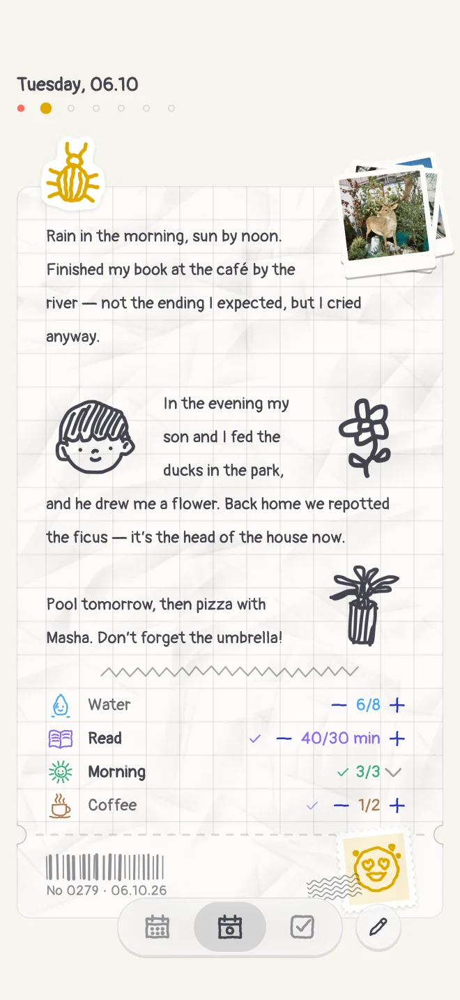

A page for every day.
Write what happened, pick a mood, drop in photos. Boop gives the day a doodle of its own, and you can swap it for any of two hundred others.
- Dotted, lined, squared or plain paper
- Photos in a pile, sketches beside the words
- A mood for the day, in its own color
